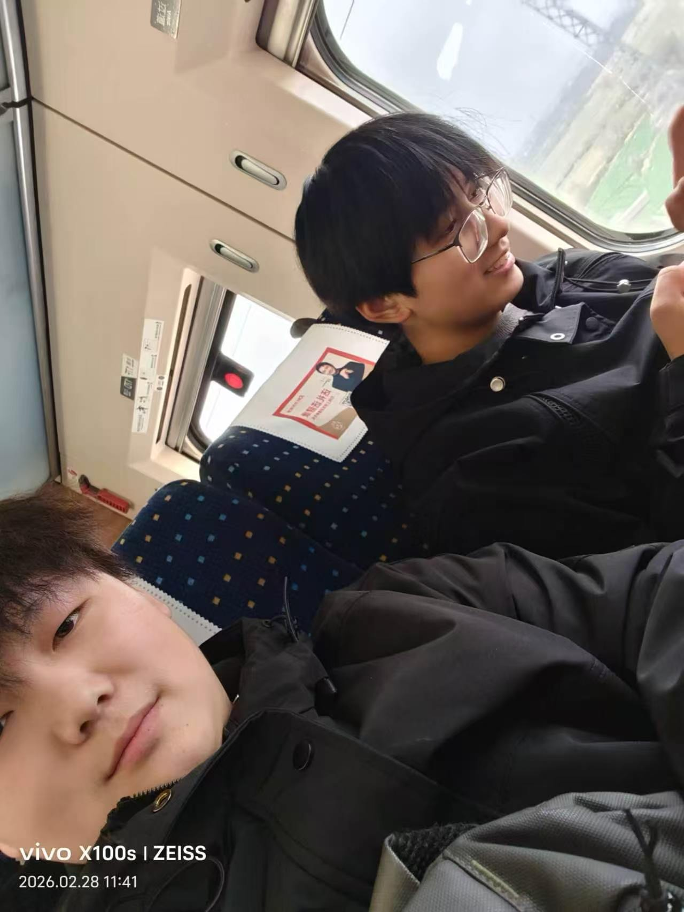

春日慢车 · 双人恋爱物语
把偶然，写成我们。
世界很大，幸好这一站，身边是你。
不必着急抵达
喜欢会沿途发生
喜欢会沿途发生
开往春天的列车15:20 · 晴
A LITTLE LOVE STORY同一趟列车，
— 故事，从你们开始 —
同一趟列车，
不同的心跳。
— 故事，从你们开始 —小楠☀

阿雨☁
两个人的，慢慢来PROLOGUE · 故事的起点
试着再靠近一点
你将以小楠的视角，回应阿雨的心意